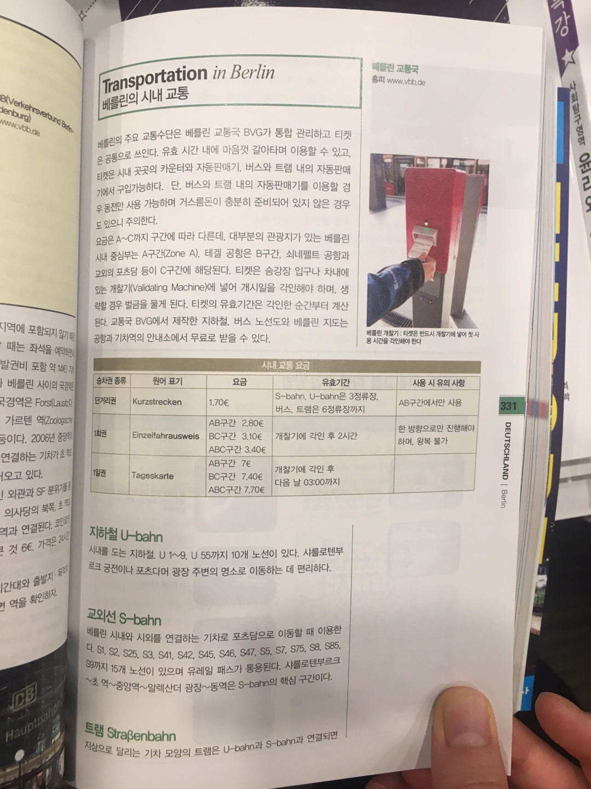
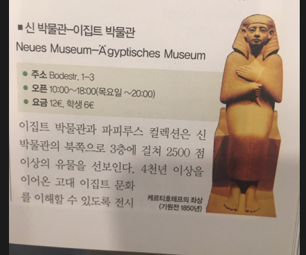

유럽 여행
유럽 이동 수단
숙소
각국 정보
독일 여행 경로
덴마크 관광지
독일 관광지-베를린
베를린 club
독일 관광지-퓌센
벨기에 관광지
프랑스 관광지
런던 여행 계획
런던 관광지
독일 관광지 - 베를린
베를린 교통수단
이집트 박물관
베를린 성당
베를린 공항 3개-
우리는 테겔(1번. Tegel공항에 도착함)
베를린국제공항(Berlin International Airport in
Tegel
:약자 TXL)
베를린-쇤펠트국제공항(Berlin-Schönefeld International Airport:약자 SXF)
템펠호프국제공항(Tempelhof International Airport:약자 THF)
베를린 교통수단
이집트 박물관

베를린 성당